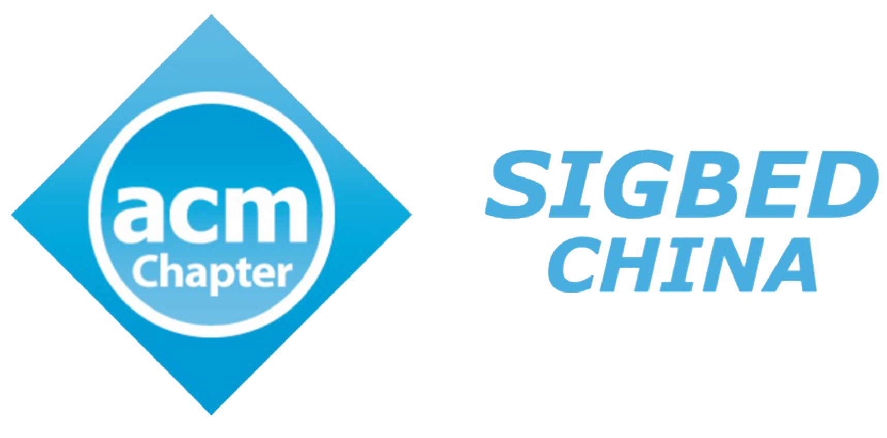

Co-located with MobiCom-2025
November 4-8, 2025
Hong Kong, China
| Home | Organization | Registration | Program | Key Dates |
- Call for Papers -
The ever-developing Internet of Things (IoT) brings the prosperity of wireless sensing and control applications. In many scenarios, radio frequency (RF) signal is the medium and carrier for the information encoding and transmission from the digital space to the physical world, which possesses a rich capability for information representation. RF computing refers to a new computing paradigm, which directly utilizes the RF signal as both the information carrier and the computation object within the RF space to achieve signal processing and transformation. The IoT devices can directly manipulate the characteristic properties of RF signals, including amplitude, frequency, phase, propagation direction, and polarization, to achieve information injection, extraction, and modification. This workshop focuses on the research of RF computing for IoT systems, including fundamental theories modeling, RF resource management, and comprehensive applications. We further hope to integrate sensing, transmission, and computing into an RF centric computing system, thereby optimizing the spectrum, energy, delay, and computation resources for IoT systems.
Potential authors are invited to submit original unpublished manuscripts that present recent advances in both theoretical and experimental research. Topics of interest include, but are not limited to:
- Modeling and computing theories for RF computing
- Low-power wireless protocols and designs for RF computing
- Backscatter communication
- Reconfigurable intelligence surface (RIS)
- Real-time tracking and localization for RF computing
- RF-centric energy harvesting and management methods and systems
- Efficient and low-power RF-based sensing and computing
- Resource-efficient machine learning on RF computing devices
- Crystal-free radio design and calibration techniques on RF computing systems
- Low-power cross-IoT protocols among RF computing devices
- Hardware design for the battery free device based on RF computing
- Hybrid analog and digital optimization based on RF computing
- Efficient signal processing techniques for RF computing systems
- Efficient RF resources generation and discovery methods
- RF signals customization adapted to diverse requirements of various IoT applications
- Fusion mechanism of sensing, transmission, and computation based on RF computing
- Spectrum optimization for RF computing systems
- Miniaturization of RF computing systems
- Performance evaluation and deployment experience of RF computing system
- Submission Guidelines -
The accepted papers will be published as part of the conference proceedings and will appear in the ACM Digital Library. Submissions should be previously unpublished and not currently under review by another conference or journal. Authors must adhere to the provided formatting guidelines, using the LaTeX styles found here, and ensure that papers do not exceed 6 pages in length. It is important to note that ACM uses 9pt fonts in all conference proceedings, and the LaTeX style implicitly defines the font size to be 9pt. The submission system will be open prior to the submission deadline. All submitted papers will be subject to a rigorous double-blind review process, where the identities of the authors are withheld from the reviewers. Consequently, authors' names and affiliations must not appear anywhere in the paper or the PDF file to maintain the integrity of the review process. Accepted papers are required to be presented at the workshop, ensuring a high standard of contribution to the conference proceedings.
We solicit three types of paper submission:
- Technical Papers up to 6 pages (including everything except references), reporting on novel research, to be presented at the workshop as an oral presentation;
- Position Papers up to 4 pages (including everything), reporting on new research directions to be presented at the workshop as an oral presentation with interactive discussion;
- Demo/Poster Papers up to 2 pages (including everything), to be presented at the workshop as an interactive demonstration or poster respectively.
- Submission Site -
- Submission Dates -
- Paper submission due: September 5th, 2025, 23:59 AOE
- Acceptance notification: October 5th, 2025, 23:59 AOE
- Camera-ready: October 20th, 2025, 23:59 AOE

| Icon made by Freepik from www.flaticon.com | © RFCom-2025 |